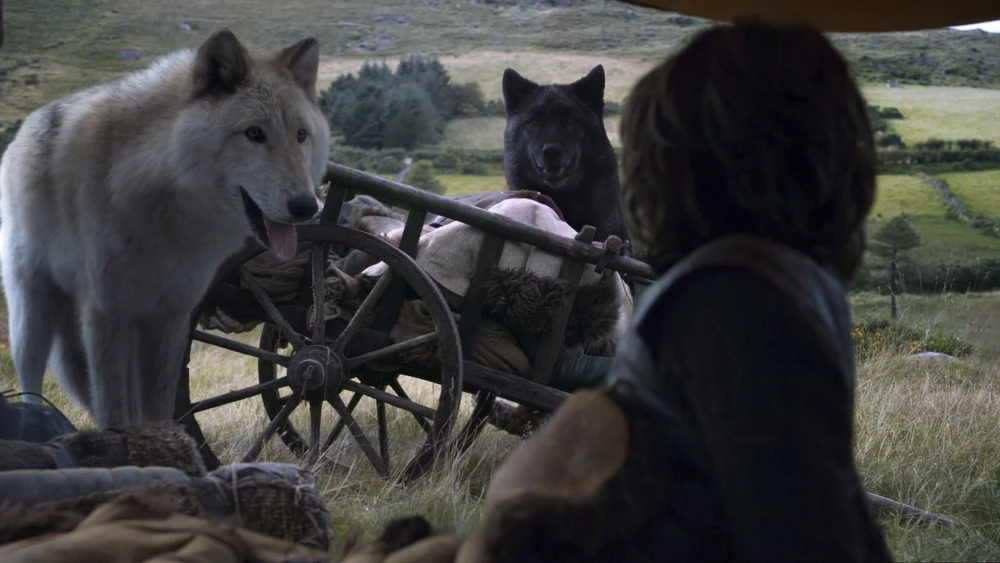

1ª TEMPORADA
Cão Felpudo é o lobo gigante de Rickon Stark. Rickon normalmente o chama apenas de Felpudo.

2ª TEMPORADA
Quando Theon Greyjoy captura Winterfell, Cão Felpudo e Verão fogem com Osha, Bran, Rickon e Hodor antes de voltarem para o castelo e se esconderem na cripta. Cão Felpudo e Verão se reencontram com os meninos e seus companheiros depois que o castelo cai e os acompanham enquanto eles viajam para o norte para encontrar o seu meio-irmão bastado Jon Snow na Muralha.
3ª TEMPORADA
Cão Felpudo continua norte com Rickon, Osha, Bran, Hodor e Verão. O grupo é posteriormente acompanhado por Jojen Reed e sua irmã, Meera. Eles param para descansar em uma pequena fazenda, sem perceber que há um grupo de selvagens nas proximidades. Quando uma tempestade assusta Hodor e quase faz com que ele indique a localização do grupo para os selvagens, Bran invoca verão, que acompanhado por Cão Felpudo matam alguns dos selvagens. Percebendo os perigos que enfrentam enquanto continuam para o norte, Bran decide enviar Rickon para longe com Osha e Cão Felpudo para manter Rickon seguro da Casa Umber. Os três vão no meio da noite para Última Lareira. É por volta desse tempo, no entanto, que o casamento vermelho ocorre e o irmão Vento Cinzento de Cão Felpudo é morto junto com Robb, Catelyn, Talisa e a maior parte do exército Stark.
6ª TEMPORADA
Cão Felpudo é previamente morto pelos Umber e apresentado a Ramsay Bolton como prova de que o garoto que estão com eles se trata de Rickon Stark, acompanhado de Osha. Quando Ramsay manda a carta desafiando Jon Snow, ele diz que tem a pele de Cão Felpudo como um tapete. Na manhã da Batalha dos Bastardos, Ramsay leva a cabeça de Cão Felpudo para Jon Snow e Sansa Stark e a joga nos pés deles, provando que está com Rickon como prisioneiro.
Como o destino de cada um dos lobos se conecta com os filhos Starks?
Mesmo que não seja uma regra, a personalidade e o destino de cada um dos lobos muitas vezes acaba sendo extremamente similar aos dos seus donos. Se pegarmos Arya e Nymeria, por exemplo, ambas acabaram deixando a sua família muito cedo para trilhar o seu próprio caminho, e nessa jornada encontraram a sua verdadeira vocação. Já Fantasma era considerado o estranho dos seis, assim como Jon Snow se sentia em relação aos seus irmãos. As mortes do Cão Felpudo e de Vento Cinzento coincidiram com as respectivas mortes de Robb e Rickon, enquanto Verão se sacrificou para salvar Bran, que de forma metafórica também acabou morrendo ao se tornar o Corvo de Três Olhos. Já Lady, sofrendo as consequência das ações de outros, e isso basicamente foi o que aconteceu com Sansa durante várias temporadas.

.png)